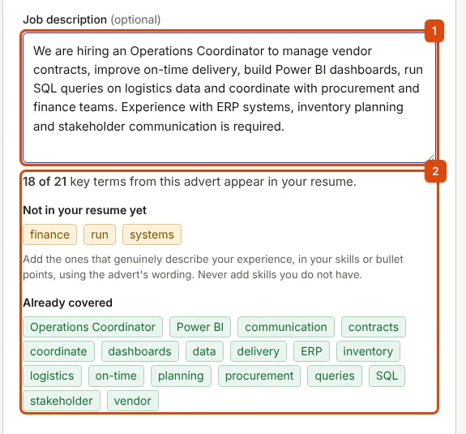

How to Tailor Your Resume to a Job Description Without Exaggerating
Tailoring is not rewriting. It is choosing which true things to show first, in the employer's own words.
What tailoring is, and is not
Tailoring means choosing, ordering and wording true content so it answers what this employer asked for. It does not mean adding skills you do not have. The National Careers Service puts it simply: "tailor your CV to the job you're applying for" and "Look at the job advert for the role you're applying for. This will usually have the job description, essential criteria and company details" (How to write a CV). The steps below take about fifteen minutes once you have a master resume.
Step 1: Mark the advert
Read the advert once and mark three things: the must-have skills and tools (often under "requirements", or repeated), the responsibilities written as verbs ("analyse", "coordinate", "build"), and specific nouns such as software, certifications or domains. Terms that appear more than once matter most.
Step 2: Map each term to your evidence
Make two columns: the advert's term, and where you can honestly show it (a project, a job, a course). Terms you cannot support stay out.
Step 3: Edit in this order
- Summary: name the role and your two most relevant strengths; see writing a resume summary.
- Skills: move the advert's skills to the front; see the skills section.
- Experience and projects: put the most relevant bullet first in each entry, and use the advert's word where it accurately describes what you did. If the advert says "stakeholder reports" and you wrote "management updates" for the same work, use its term.
- Section order: for a project-heavy role, put projects above education.
Step 4: Compare on your device
In the resume builder's Review step, paste the advert under "Compare with a job description". It lists which of the advert's key terms your resume already uses and which it does not. The comparison runs in your browser; the advert is not stored or sent anywhere.

Read the "missing" list as a prompt. If a missing term describes something you have genuinely done, add it where it fits. If it does not, leave it out. A keyword comparison is not an employer's screening system and cannot predict a shortlist; it only catches obvious gaps. For how software reads the file itself, see will an ATS read your resume.
Keep a master version
- Keep one master resume with every role, project and skill.
- For each application, copy it and reorder or remove; never rebuild from memory.
- Name each copy by company and role, and send it with a short, polite note that names the role and says where you saw the advert. Note which version went where, so you can reread it before an interview. The National Careers Service's interview advice starts with exactly that: "look over your CV or application form and think about what the interviewer might ask you" (Interview tips).
The builder can save a backup file of your resume and import it later, which makes the master-and-copies habit easy.
Sources
- National Careers Service (UK): How to write a CV, UK government careers service; quoted where its advice applies to applications in India
- National Careers Service (UK): Application form advice, matching the advert's keywords
- National Careers Service (UK): Interview tips
The advice on this page is based on the sources listed above and on ApplyReady's own resume builder. Found a mistake? Report an error.